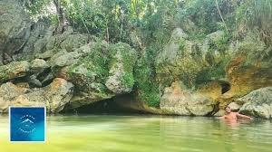
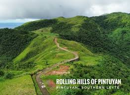

Overview
Rural tourism in Zamboanga Sibugay offers an escape into the serene countryside, characterized by rolling hills, expansive plantations, and untouched natural wonders. It provides a unique opportunity to witness the quiet, hardworking lifestyle of the Subanen people and the local farming communities.
From the refreshing waters of inland falls to the mysterious depths of local caves, the rural areas of the province invite visitors to slow down and appreciate the raw beauty of Mindanao's interior.
Popular Rural Destinations
Moalboal Cave (Titay)

Located in the rural outskirts of Titay, the Moalboal Cave is a hidden gem surrounded by lush vegetation. It offers a cool retreat for locals and adventurous travelers, showcasing the limestone formations that define the province's underground landscape.
Tagbilat Falls (Ipil)
A favorite spot for rural dwellers in Ipil, Tagbilat Falls is tucked away in the countryside. It is the perfect example of rural recreation, where families gather for picnics amidst the sound of cascading water and the shade of ancient trees.
The Rolling Hills of Siay

Often called the **"Batanes of Zamboanga Sibugay,"** the rolling hills of **Siay** are a stunning rural landscape of undulating green meadows. It is a premier destination for photography and countryside reflection, offering panoramic views where the land meets the sky. A visit here provides a true connection to the vastness and serenity of Mindanao’s rural heartland.